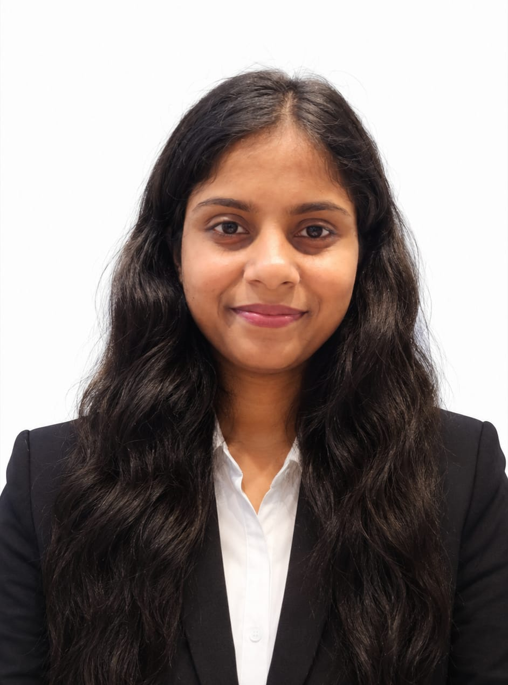

012025
⌾
Machine Learning · Cybersecurity
Real-time risk scoring
& IP intelligence.
PythonFlaskGradient Boosting
92% model accuracy
Available for opportunities
I’m Jyoti Sharma, an M.Tech researcher and machine learning practitioner designing thoughtful systems at the intersection of data, vision, and healthcare.

01 / PROFILE
I bring a strong foundation in machine learning, data analysis, and software development to complex problems. My work is guided by curiosity, rigorous experimentation, and the belief that well-designed data systems can make a tangible difference.
02 / SELECTED WORK
Machine Learning · Cybersecurity
92% model accuracy
Data Analytics · ETL
Machine Learning · Regression
Frontend Development
03 / RESEARCH
My ongoing thesis explores multimodal autism spectrum disorder classification, combining questionnaire responses with T1 MRI and rs-fMRI data.
Discuss the research →CONFERENCE PAPER · SoCTA 2025
04 / CREDENTIALS

EDVERB LEARNING · IEEE RGIT

EDVERB LEARNING

EDVERB LEARNING
05 / EXPERIENCE & RECOGNITION
Edverb Learning Pvt. Ltd. — optimized CV features for embedded execution with ESP32-CAM.
Presented at SoCTA 2025, sharing an ensemble approach for ASD classification.
IEEE-RGIT — led student-facing technical initiatives and digital experiences.
06 / CONTACT
Mumbai, Maharashtra, India · Open to research and data opportunities
LinkedIn ↗